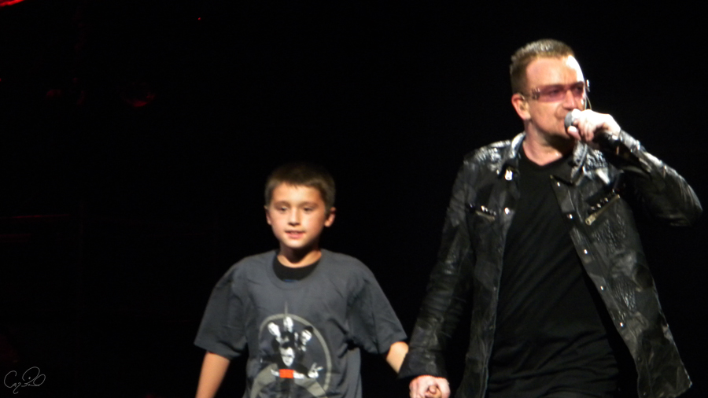

Emmett Grundberg
musician

|
Emmett Grundberg is an 18 year old musician. He has been playing the guitar since age 4, when he decided to teach himself on a small red strat. Born and raised in the suburbs of Chicago, he acquired a heavy influence from the Blues early on, and since then has become an aficionado of many genres, from Classical Rock to Jam Band. Emmett is mainly self-taught, but credits teachers at the Clarendon Hills Music Academy in Clarendon Hills, IL, with extensive mentoring. He has mastered the art of “Jamming” and “Riffing” and can generally be heard with the amp at full volume, much to the love of his family and dog. Aside from the guitar, Emmett is also skilled on the Banjo, Mandolin, and Drums, all of which were self-taught. He has accompanied many singers in competition, and has played at local restaurants and bars around the Chicago suburbs. A career in music can be challenging, so when he’s not jamming, Emmett can be found pursuing a degree in Music Business from the University of Alabama.
|
| Favorites | |
|---|---|
| Bands | Phish, The Grateful Dead, Jack White, Jane's Addiction, Derek Trucks |
| Concerts | Phish "Baker's Dozen NYC", Grateful Dead "Fare Thee Well" |
| Random | old Marty Robbins songs |
Check out one of Emmett's favorite moments!
2009 U2 Concert @ Soldier Field See what Emmett has been up to since then!
You can find him on social media at...
 | @e_grundberg | |
| @e_grundberg |